22 treks
Treks within 200 km of Shimla in a straight line, nearest first. Road distance is longer.
Prashar Lake 77 km · Buran Ghati 93 km · Kedarkantha 96 km · Rupin Pass 97 km · Phulara Ridge 99 km · Sar Pass 99 km · Kheerganga 103 km · Pin Parvati Pass 105 km · Nag Tibba 107 km · Har Ki Dun 112 km · Bali Pass 113 km · Dodital 130 km · Hampta Pass 132 km · Bhrigu Lake 134 km · Dayara Bugyal 137 km · Beas Kund 140 km · Triund 151 km · Indrahar Pass 151 km · Kareri Lake 157 km · Kedartal 170 km · Gaumukh Tapovan 176 km · Madmaheshwar 199 km
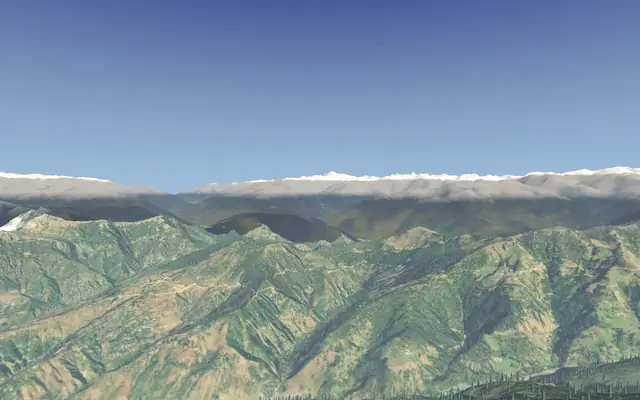
Prashar Lakeपराशर झील
Himachal · Mandi
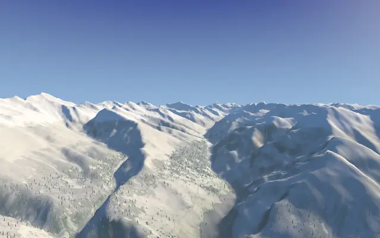
Buran Ghatiबुरान घाटी
Himachal · Shimla–Kinnaur
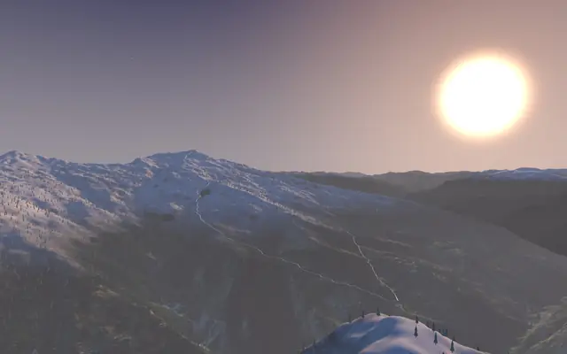
Kedarkanthaकेदारकांठा
Uttarakhand · Uttarkashi
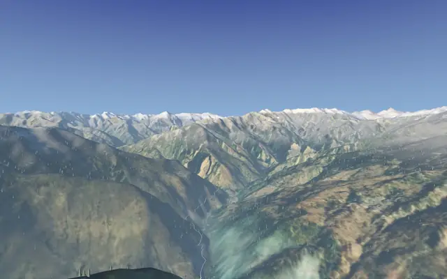
Rupin Passरुपिन पास
Himachal · Uttarkashi–Kinnaur
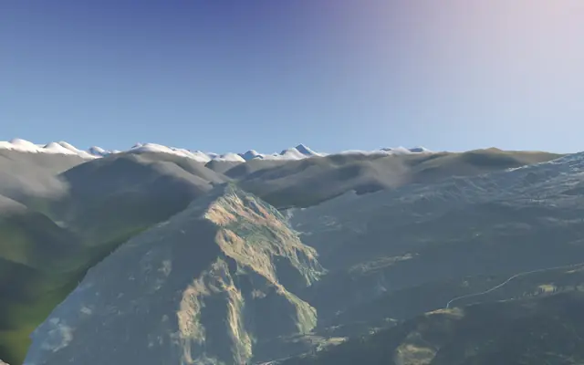
Phulara Ridgeफुलारा रिज
Uttarakhand · Uttarkashi
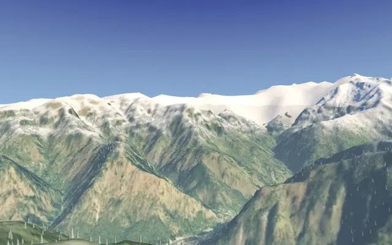
Sar Passसर पास
Himachal · Kullu
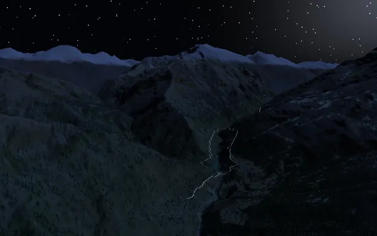
Kheergangaखीरगंगा
Himachal · Kullu
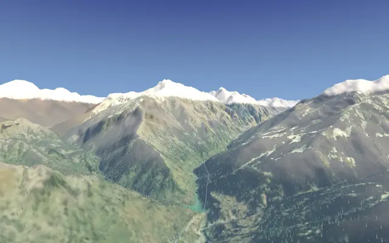
Pin Parvati Passपिन पार्वती पास
Himachal · Kullu–Spiti
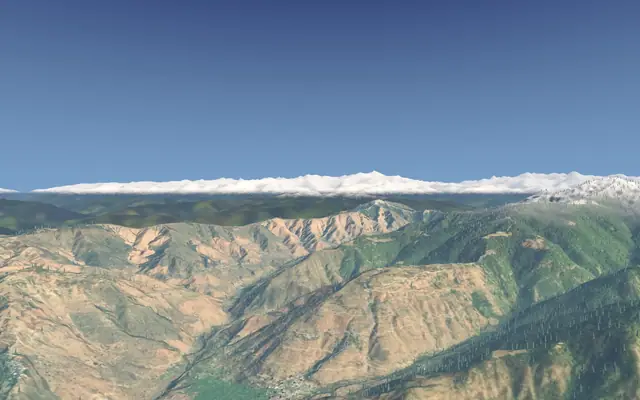
Nag Tibbaनाग टिब्बा
Uttarakhand · Tehri
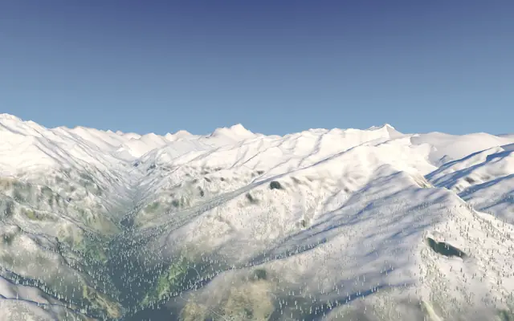
Har Ki Dunहर की दून
Uttarakhand · Uttarkashi
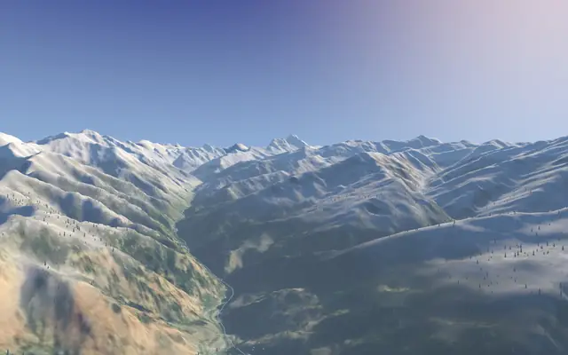
Bali Passबाली पास
Uttarakhand · Uttarkashi
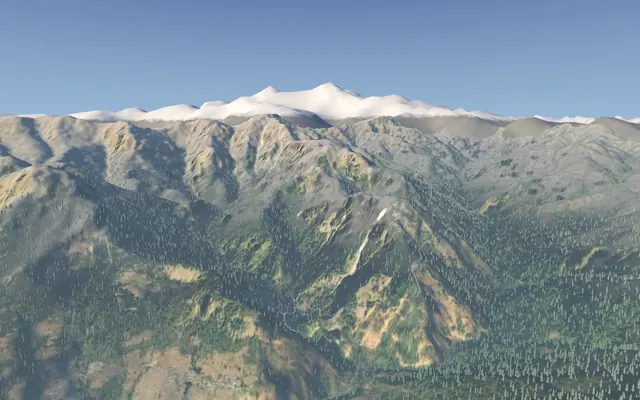
Doditalडोडीताल
Uttarakhand · Uttarkashi
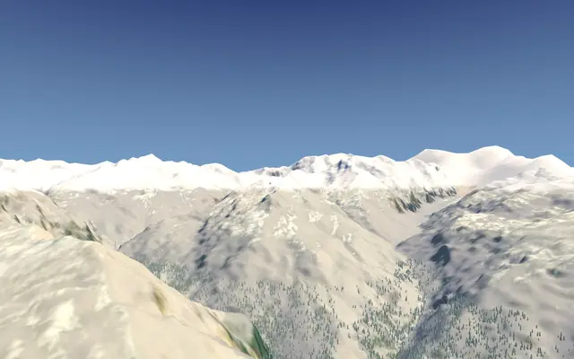
Hampta Passहम्टा पास
Himachal · Kullu–Lahaul
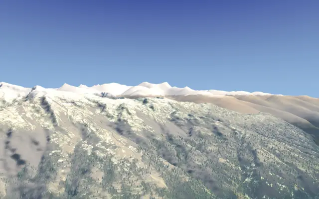
Bhrigu Lakeभृगु झील
Himachal · Kullu

Dayara Bugyalदयारा बुग्याल
Uttarakhand · Uttarkashi
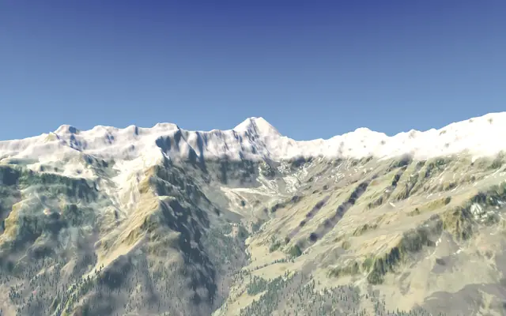
Beas Kundब्यास कुंड
Himachal · Kullu
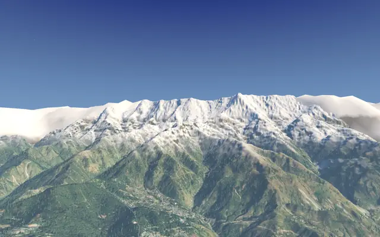
Triundत्रिउंड
Himachal · Kangra
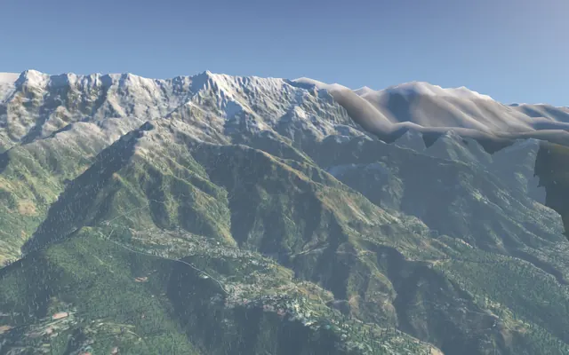
Indrahar Passइंद्रहार दर्रा
Himachal · Kangra
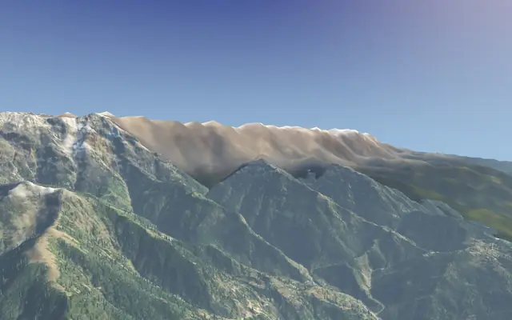
Kareri Lakeकरेरी झील
Himachal · Kangra
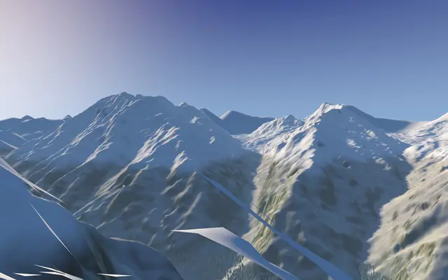
Kedartalकेदारताल
Uttarakhand · Uttarkashi

Gaumukh Tapovanगौमुख–तपोवन
Uttarakhand · Uttarkashi
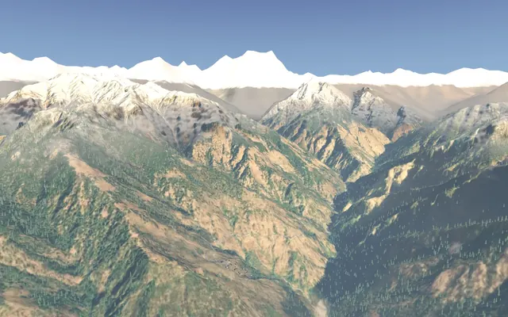
Madmaheshwarमदमहेश्वर
Uttarakhand · Rudraprayag